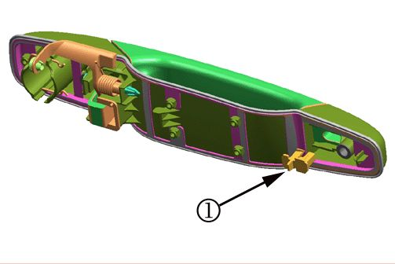
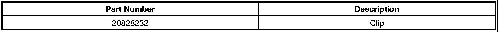
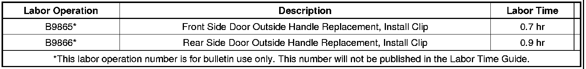

Body - Outside Door Handle Pulls Out of Base
TECHNICALBulletin No.: 09-08-64-023
Date: June 03, 2009
Subject: Outside Door Handle Pulls Out of Base, Loose Handle (Install Clip to Outside Door Handle Assembly)
Models:
2007-2009 Cadillac Escalade, Escalade ESV, Escalade EXT
2007-2009 Chevrolet Avalanche, Silverado, Suburban, Tahoe
2007-2009 GMC Sierra, Yukon, Yukon XL, Yukon Denali, Yukon Denali XL
Condition
Customers may comment that the outside door handle is loose in the handle base. This condition is most common on the driver's door , however it can occur on any of the four outside door handles on the vehicle. This condition is more prevalent in warmer climates.
Cause
The pins that retain the handle to the base at its forward pivot point can be pulled out of the base (The handle does not fall off of the vehicle). This occurs in hot temperatures when the handle is pulled in an outboard and rearward motion when opening the door.
Correction
A new clip has been designed to prevent the legs of the fork area of the handle from collapsing and letting the handle pull out. Use the following procedure to install the clip into the outside door handle assembly.
1. Remove the outside door handle that is experiencing the concern.
- Use the published procedure in SI for Front Side Door Outside Handle Replacement for front door handle service.
- Use the published procedure in SI for Rear Side Door Outside Handle Replacement for rear door handle service.

2. With the back of the handle assembly exposed, reposition the handle to properly engage the pivot pins into the handle base. With the handle pivot pins properly engaged, install the service clip (1).
3. Reinstall the handle to the vehicle and verify its function.
Parts Information

Warranty Information

For vehicles repaired under warranty, use the table above.

Disclaimer